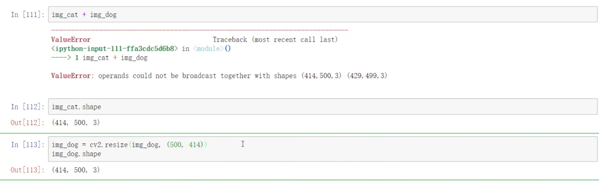

Opencv in Pycharm
Pycharm下的opencv使用1：基本图像操作导论
在Pycharm中导入opencv
笔者被C++实现的opencv干到心态炸裂了，所以这里先整一篇基于python的opencv的博客。
在pycharm中导入opencv很容易：只需要在Project的setting里给解释器安装上opencv-python库就好了。使用这个程序跑一下看看可不可以读取图像：
#向工程文件下新建一个img文件夹,放好你的图片，我这里放的是test.pngimport cv2
img_path="img/test.png"
img=cv2.imread(img_path)
cv2.imshow("Test img can be shown below!",img)
cv2.waitKey(0)
cv2.destroyAllWindows() 跳出这个即为成功！开始你的opencv的欢乐时间！
计算机眼中的图片
在计算机眼中，图像由矩阵构成
数值的大小表明了图像的亮度，而通道表明了一个颜色：一个R通道上的255表明这是在Red上很亮
下面，我们来介绍一下我们应该怎么读取图像：
import cv2#不同于RGB，我们读取的格式是BGR
import matplotlib.pyplot as plt
import numpy as np
#caution:the input should be the addr of the img
img=cv2.imread("\\imgpath!")读取的结果是：一个nd array
好抽象：可不可以直接展示图片啊：
cv2.imshow('img',img)
cv2.waitKey(0)
cv2.destroyAllWindows()我们试一下这个：
import cv2
import showimg as simg
import numpy as np
import matplotlib.pyplot as plt
img = cv2.imread('1.png')
simg.imgshow("1",img)
cv2.waitKey(0)
cv2.destroyAllWindows()也可以封装一个函数：
def cv_show(nameWindow,img):
{
cv2.imshow(nameWindow,img)
cv2.waitKey(0)
cv2.destroyAllWindows()
}我们也可以查看一个图片的大小：
img.shape
#(175, 286, 3)我们可以设置读入的方式：比如说读入灰度图
img=cv2.imread("\\imgpath!"，cv2.IMREAD_GREYSCALE)保存我们产出的图像
cv2.imwrite('savedfilename',img)可以计算像素点的个数：
img.size()视频
视频由图像组成，也就是说，我们可以读取视频：
vc=cv2.VideoCapture('videofilepath') 我们是不是读取成功了？这个看如下的代码判断：
if vc.isOpened():
open.frame=vc.read()
else:
open=False
我们来运行的读取视频
while open:
ret,frame=vc.read()
if frame is None:
break
if ret==True:
gray=cv2.cvtColor(frame,cv2.COLOR_BGR2GRAY)
cv2.imshow('result',gray)
if cv2.waitKey(10)&0xFF==27:#按下ESC退出或者视频播放完毕
break
vc.release()
cv2.destroyAllWindows()截取部分图片（ROI）
img=cv2.imgread('Path')
cat=img[0:200,0:200]
cv_show('cat',cat)这样我们就利用切片截取了部分图片了.
颜色通道提取
我们可以分离图片，通过不同的颜色通道提取：
b,g,r=cv2.split(img)这是效果：1，2，3分别代表b,g,r
1:
2:
3:
当然也可以合回去：
img=cv2.merge(b,g,r)我们也可以单独保留，直接修改：
#只保留R
cur_img=img.copy()
cur_img[:,:,0]=0
cur_img[:,:,1]=0
cv2.imshow('1',cur_img)边界填充
我们可以扩充图像，通过一些方式来对图像进行扩充：请看这里：
top_size,bottom_size,left_size,right_size=(50,50,50,50)#定位点
replicate=cv2.copyMakeBorder(img,top_size,bottom_size,left_size,right_size,borderType=cv2.BORDER_REPLICATE)
reflect=cv2.copyMakeBorder(img,top_size,bottom_size,left_size,right_size,borderType=cv2.BORDER_REFLECT)
reflect101=cv2.copyMakeBorder(img,top_size,bottom_size,left_size,right_size,borderType=cv2.BORDER_REFLECT_101)
wrap=cv2.copyMakeBorder(img,top_size,bottom_size,left_size,right_size,borderType=cv2.BORDER_WRAP)
constant=cv2.copyMakeBorder(img,top_size,bottom_size,left_size,right_size,borderType=cv2.BORDER_CONSTANT,value=0) 我们得到了五张图像，随后，我们使用imwrite输出图像，同时导入matplotlib的pyplot子库进行观察：
这是总的效果：
仔细观察：
第一张图是展示了
replicate：这个单词是复制的意思：直接复制最边缘的像素
reflect：对感兴趣的部分进行两边复制：fedcba|abcdef|fedcba
reflect101:但是是对最边缘的像素为对称轴进行复制:gfedcba|abcdefgh|gfedcba
wrap:外包装：cdefgh|abcdefgh|abcdefg
constant:对图像以默认黑值填充
对图像进行数值操作
我们可以对numpy进广播操作。人话翻译成C++就是cv2库重载了运算符号，使之我们可以对矩阵进行广义的加法：
img_cat=cv2.imread('cat.jpg')
img_cat_GeneralAdd=img_cat+10;
img_cat[:5,:,0]
img_cat2[:5,:,0] 在控制台上输出就可以发现矩阵里每一个数值都加上了一个10。

（懒得自己跑，截个图）
那可不可以狭义相加呢？当然可以，结合线性代数的常识，相加的矩阵必须满足大小完全一致。假设我们已经满足了这个前提，直接相加得到的结果是不是就是放到矩阵的值呢？
显然不是！因为RGB有界，不可以超过255.在重载的+中，矩阵的RGB值自动%256，就是除以2256取它的余数放到矩阵里。那还有别的加法吗？有：使用方法add，传入cv2.add(img_cat,img_cat2)就可以了，达到255之后就不会取模，只会停在255不动
图像叠加
我们也可以对图像进行叠加。但是注意，我们首先要调整图像大小一致：
img_cat.shape
img_dog=imread(path)# path是路径
img_dog=cv2.resize(img_dog,(/*size required to resize*/))
同样的还有其他resize方法：
required_pic=cv2.resize(img_required_resize,(0,0),fx=1,fy=3) 这是个什么玩意呢？指的是我们依照某个点把图像在X轴上拉长3倍数，Y轴不变。
现在，我们使用addWeighted来叠加图像，以混合图片特征。
res=cv2.addWeighted(img_cat,0.4,img_dog,0.6,0)
#img_cat*0.4+img_dog*0.6+0//最后一项是亮度提升图像阈值
我们可以使用一些参数，对图像进行有条件的处理
ret,dst=cv2.threshold(src,thresh,maxval,type)src:输入，只能输入单通道图像，通常是灰度图
dst：输出图
thresh:执行阈值
maxval:超过或小于阈值后所赋予的值
type:方法，如下：
1.cv2.THRESH_BINARY：超过阈值的取maxval,否则取0
2.cv2.THRESH_BINARY_INV反过来
3.THRESH_TRUNC大于阈值的设置成阈值
4.THRESH_TOZERO大于阈值的不变，否则设置成0
5.THRESH_TOZERO_INV反转
我们依旧使用matplotlib的pyplot库放送一下
import cv2
import matplotlib.pyplot as plt
img=cv2.imread('2.png')
ret,thresh1=cv2.threshold(img,127,255,cv2.THRESH_BINARY)
ret,thresh2=cv2.threshold(img,127,255,cv2.THRESH_BINARY_INV)
ret,thresh3=cv2.threshold(img,127,255,cv2.THRESH_TRUNC)
ret,thresh4=cv2.threshold(img,127,255,cv2.THRESH_TOZERO)
ret,thresh5=cv2.threshold(img,127,255,cv2.THRESH_TOZERO_INV)
titles=['Original Image','BINARY','BINARY_INV','THRESH_TRUNC','TOZERO','TOZERO_INV']
images=[img,thresh1,thresh2,thresh3,thresh4,thresh5]
for i in range(6):
plt.subplot(2,3,i+1),plt.imshow(images[i],'gray')
plt.title(titles[i])
plt.xticks([]),plt.yticks([])
plt.show()
看看：